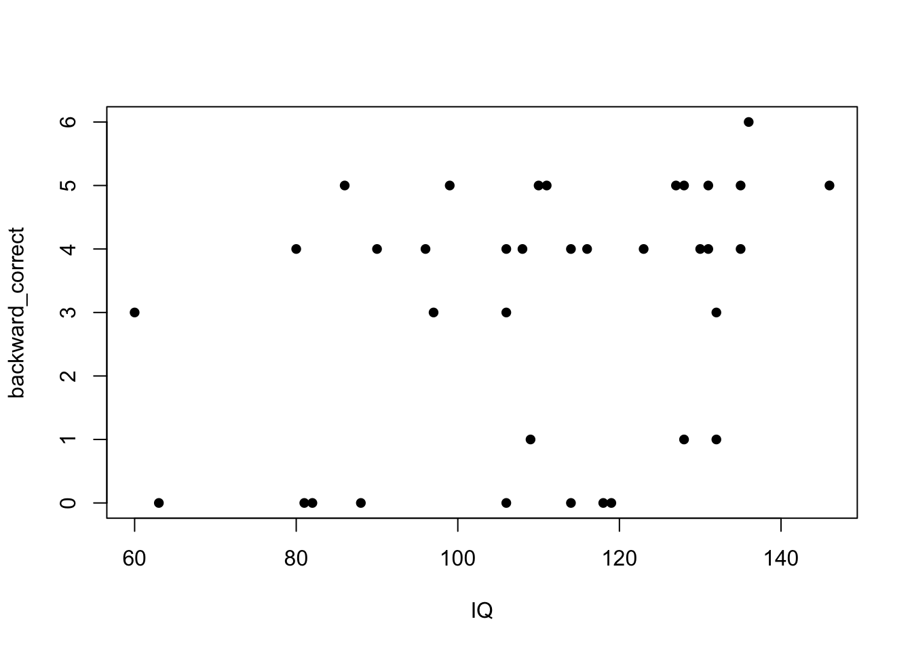
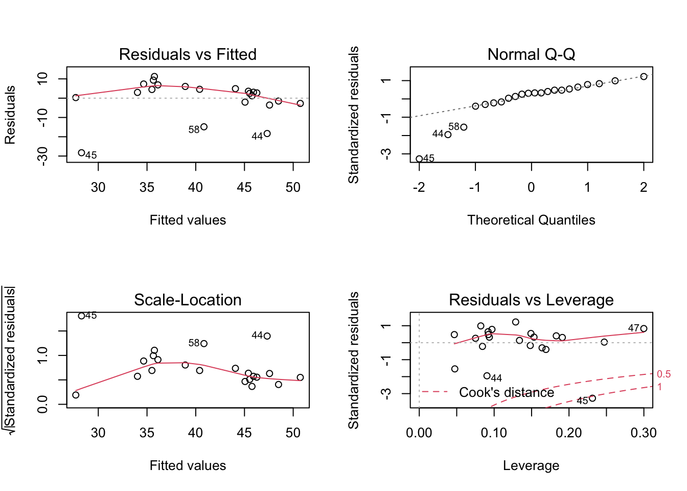

QP Data Analysis
Diana Sanchez
August 2022
rm(list = ls(all.names = TRUE)) #clear R environment
Load libraries
library(readr)
library(ggplot2)
library(GGally)
library(speakr)
library(dplyr)
library(tidyverse)
library(readr)
library(plyr)
library(stringi)
library(purrr)
library(broom)
library(scatterplot3d)
library(kableExtra)
library(tidyr)
library(readr)
library(readxl)
# get summary table for lm results
library(gtsummary)
library(finalfit) # works with plyr
library(jtools)
library(texreg)
library(kableExtra)
library(sjPlot)
library(sjmisc)
library(sjlabelled)
library(stargazer)Loading raw data for experiment tasks
Loading .txt data anc converting .cvs to df
Loading raw data for backward
setwd("~/Desktop/RStudio_QP/experiment_rawdata")
#Load backward raw data
all_backward <- file.path("~/Desktop/RStudio_QP/experiment_rawdata/Backward")
#Create list files
backward_file_names <- list.files(all_backward, pattern = ".txt", full.names = TRUE)
#turns list to list object (output)
backward_data <- lapply(backward_file_names, read.table)
#change file names
names(backward_data) <- stri_sub(backward_file_names, -9, -5)
#backward_data #use this to read df
#data frame
backward_df <- do.call("rbind", backward_data)
#converts values to string
str(backward_df)## 'data.frame': 329 obs. of 4 variables:
## $ V1: int 2 3 4 5 6 6 6 0 2 3 ...
## $ V2: int 2 3 4 5 6 7 7 2 2 3 ...
## $ V3: int 1 1 1 1 1 0 0 0 1 1 ...
## $ V4: int 153 447 44 158 340 387 355 375 132 319 ...backward_df <- tibble::rownames_to_column(backward_df, "row_name")
colnames(backward_df) <- c("participant_observationNum","highest_corsi","Number_of_items","backward_result","table_row")
#saving df
write.csv(backward_df,"~/Desktop/RStudio_QP/experiment_rawdata/all_backward.csv")Loading raw data for flanker
setwd("~/Desktop/RStudio_QP/experiment_rawdata")
#Load backward raw data
all_flanker <- file.path("~/Desktop/RStudio_QP/experiment_rawdata/Flanker")
#Create list files
flanker_file_names <- list.files(all_flanker, pattern = ".txt", full.names = TRUE)
#turns list to list object (output)
flanker_data <- lapply(flanker_file_names, read.table)
#change file names
names(flanker_data) <- stri_sub(flanker_file_names, -9, -5)
#flanker_data #use this only to read df
#data frame
flanker_df <- do.call("rbind", flanker_data)
str(flanker_df)## 'data.frame': 2900 obs. of 4 variables:
## $ V1: chr "BBBBB" "CCXCC" "VVBVV" "BBXBB" ...
## $ V2: int 1 1 1 0 0 0 0 1 0 1 ...
## $ V3: int 1 1 1 1 2 1 3 2 1 1 ...
## $ V4: int 1035 712 721 1462 1875 1242 2000 948 480 1757 ...flanker_df <- tibble::rownames_to_column(flanker_df, "row_name")
colnames(flanker_df) <- c("participant_observationNum","stimulus", "congruent","flanker_result","response_time")
#saving df
write.csv(flanker_df,"~/Desktop/RStudio_QP/experiment_rawdata/all_flanker.csv")Loading raw data for stroop
setwd("~/Desktop/RStudio_QP/experiment_rawdata")
#Load backward raw data
all_stroop <- file.path("~/Desktop/RStudio_QP/experiment_rawdata/Stroop")
#Create list files
stroop_file_names <- list.files(all_stroop, pattern = ".txt", full.names = TRUE)
#turns list to list object (output)
stroop_data <- lapply(stroop_file_names, read.table)
#change file names
names(stroop_data) <- stri_sub(stroop_file_names, -9, -5)
#stroop_data #use this only to read df
#data frame
stroop_df <- do.call("rbind", stroop_data)
str(stroop_df)## 'data.frame': 2320 obs. of 8 variables:
## $ V1: chr "training" "training" "training" "training" ...
## $ V2: chr "blue" "green" "yellow" "blue" ...
## $ V3: chr "green" "yellow" "green" "red" ...
## $ V4: int 0 0 0 0 1 0 1 0 0 0 ...
## $ V5: int 14 9 2 16 8 4 15 6 6 14 ...
## $ V6: int 3 4 2 1 1 1 3 2 2 2 ...
## $ V7: int 2 1 1 1 1 1 1 1 1 1 ...
## $ V8: int 1353 1271 1216 1113 1333 1458 1284 1222 1244 1104 ...stroop_df <- tibble::rownames_to_column(stroop_df, "row_name")
colnames(stroop_df) <- c("participant_observationNum","stimulus", "word_name","word_color","stroop_match", "row_number","key_pressed", "stroop_result", "response_time")
#saving df
write.csv(stroop_df,"~/Desktop/RStudio_QP/experiment_rawdata/all_stroop.csv")#Analysis of all_data ## Tidy all_data all_data df includes all 58 participants, two groups. Only total correct responses are included for each experimental task (flanker, stroop, backward).
#Load working data
all_data <- read.csv("~/Desktop/RStudio_QP/experiment_data/all_data.csv", header = TRUE)
#summary
summary(all_data)## participant age IQ backward_correct
## Length:58 Min. :22.00 Min. : 60.00 Min. :0.000
## Class :character 1st Qu.:32.00 1st Qu.: 96.25 1st Qu.:1.000
## Mode :character Median :38.00 Median :107.00 Median :4.000
## Mean :39.19 Mean :108.09 Mean :3.138
## 3rd Qu.:47.00 3rd Qu.:122.25 3rd Qu.:5.000
## Max. :59.00 Max. :146.00 Max. :6.000
## flanker_correct stroop_correct
## Min. : 0.00 Min. : 0.00
## 1st Qu.:40.50 1st Qu.:38.00
## Median :45.00 Median :39.00
## Mean :41.91 Mean :36.83
## 3rd Qu.:47.00 3rd Qu.:40.00
## Max. :49.00 Max. :40.00#adding "bilingual"column to data set (all_data)
all_data$bilingual = c(rep(0,36),rep(1,22)) # 0=nonLanguage, 1=language
#separate groups: nonLanguage teachers and language teachers
nonLanguage <- all_data[1:36, ]
language <- all_data[37:58, ]
nonLanguage$language = "NonLanguage"
language$language = "Language"
#adding column to indicate nonLanguage or language for each participant
all_data = bind_rows(nonLanguage,language)##Analysis of each experiment + group+age+IQ
stroop_data = lm(stroop_correct ~ bilingual+age+IQ, data=all_data)
summary(stroop_data)##
## Call:
## lm(formula = stroop_correct ~ bilingual + age + IQ, data = all_data)
##
## Residuals:
## Min 1Q Median 3Q Max
## -32.427 -0.698 1.080 2.830 8.975
##
## Coefficients:
## Estimate Std. Error t value Pr(>|t|)
## (Intercept) 23.81077 6.56531 3.627 0.000637 ***
## bilingual -0.07753 1.84059 -0.042 0.966556
## age -0.10015 0.08968 -1.117 0.269051
## IQ 0.15701 0.04838 3.245 0.002017 **
## ---
## Signif. codes: 0 '***' 0.001 '**' 0.01 '*' 0.05 '.' 0.1 ' ' 1
##
## Residual standard error: 6.644 on 54 degrees of freedom
## Multiple R-squared: 0.1905, Adjusted R-squared: 0.1455
## F-statistic: 4.235 on 3 and 54 DF, p-value: 0.009247flanker_data = lm(flanker_correct ~ bilingual+age+IQ, data=all_data)
summary(flanker_data)##
## Call:
## lm(formula = flanker_correct ~ bilingual + age + IQ, data = all_data)
##
## Residuals:
## Min 1Q Median 3Q Max
## -36.778 -1.168 1.397 4.657 10.463
##
## Coefficients:
## Estimate Std. Error t value Pr(>|t|)
## (Intercept) 32.33555 7.96362 4.060 0.000159 ***
## bilingual -0.32869 2.23261 -0.147 0.883504
## age -0.14152 0.10878 -1.301 0.198803
## IQ 0.14108 0.05869 2.404 0.019679 *
## ---
## Signif. codes: 0 '***' 0.001 '**' 0.01 '*' 0.05 '.' 0.1 ' ' 1
##
## Residual standard error: 8.059 on 54 degrees of freedom
## Multiple R-squared: 0.1338, Adjusted R-squared: 0.08569
## F-statistic: 2.781 on 3 and 54 DF, p-value: 0.04972backward_data = lm(backward_correct ~ bilingual+age+IQ, data=all_data)
summary(backward_data)##
## Call:
## lm(formula = backward_correct ~ bilingual + age + IQ, data = all_data)
##
## Residuals:
## Min 1Q Median 3Q Max
## -3.6784 -1.4709 0.4089 1.3641 2.6331
##
## Coefficients:
## Estimate Std. Error t value Pr(>|t|)
## (Intercept) -0.94033 1.83101 -0.514 0.60966
## bilingual 0.56647 0.51333 1.104 0.27469
## age -0.02540 0.02501 -1.016 0.31429
## IQ 0.04495 0.01349 3.332 0.00156 **
## ---
## Signif. codes: 0 '***' 0.001 '**' 0.01 '*' 0.05 '.' 0.1 ' ' 1
##
## Residual standard error: 1.853 on 54 degrees of freedom
## Multiple R-squared: 0.1901, Adjusted R-squared: 0.1451
## F-statistic: 4.225 on 3 and 54 DF, p-value: 0.009362Analysis by groups
Data Analysis for nonLanguage Group The nonLanguage group consist of the teachers who only use one language in their professional work setting.
Linear regression model for nonLanguage BACKWARD task
data(nonLanguage)## Warning in data(nonLanguage): data set 'nonLanguage' not foundhead(nonLanguage)## participant age IQ backward_correct flanker_correct stroop_correct bilingual
## 1 adnm2 36 135 5 45 39 0
## 2 bjfc1 40 108 4 44 38 0
## 3 buzt0 30 146 5 49 39 0
## 4 bwat2 34 128 1 46 39 0
## 5 cbky9 49 135 4 48 40 0
## 6 cfug6 34 63 0 27 2 0
## language
## 1 NonLanguage
## 2 NonLanguage
## 3 NonLanguage
## 4 NonLanguage
## 5 NonLanguage
## 6 NonLanguage##plot
plot(backward_correct ~ age + IQ, data = nonLanguage, pch=16)
#linear model
backward_model_nonLanguage <- lm(backward_correct ~ age + IQ, data = nonLanguage)
#abline(backward_model_nonLanguage)
my_results <- tidy(backward_model_nonLanguage)
my_results## # A tibble: 3 × 5
## term estimate std.error statistic p.value
## <chr> <dbl> <dbl> <dbl> <dbl>
## 1 (Intercept) -0.194 2.35 -0.0828 0.934
## 2 age -0.00622 0.0366 -0.170 0.866
## 3 IQ 0.0316 0.0154 2.05 0.0482backward_model_nonLanguage##
## Call:
## lm(formula = backward_correct ~ age + IQ, data = nonLanguage)
##
## Coefficients:
## (Intercept) age IQ
## -0.194378 -0.006223 0.031591summary(backward_model_nonLanguage)##
## Call:
## lm(formula = backward_correct ~ age + IQ, data = nonLanguage)
##
## Residuals:
## Min 1Q Median 3Q Max
## -3.3658 -2.0974 0.6713 1.3846 2.6145
##
## Coefficients:
## Estimate Std. Error t value Pr(>|t|)
## (Intercept) -0.194378 2.346418 -0.083 0.9345
## age -0.006223 0.036562 -0.170 0.8659
## IQ 0.031591 0.015400 2.051 0.0482 *
## ---
## Signif. codes: 0 '***' 0.001 '**' 0.01 '*' 0.05 '.' 0.1 ' ' 1
##
## Residual standard error: 1.934 on 33 degrees of freedom
## Multiple R-squared: 0.1174, Adjusted R-squared: 0.06393
## F-statistic: 2.195 on 2 and 33 DF, p-value: 0.1273par(mfrow = c(2,2))
plot(backward_model_nonLanguage) AIC(backward_model_nonLanguage)## [1] 154.5309BIC(backward_model_nonLanguage)## [1] 160.865###
test2 = lm(backward_correct ~ bilingual+age+IQ, data=all_data)
summary(test2)##
## Call:
## lm(formula = backward_correct ~ bilingual + age + IQ, data = all_data)
##
## Residuals:
## Min 1Q Median 3Q Max
## -3.6784 -1.4709 0.4089 1.3641 2.6331
##
## Coefficients:
## Estimate Std. Error t value Pr(>|t|)
## (Intercept) -0.94033 1.83101 -0.514 0.60966
## bilingual 0.56647 0.51333 1.104 0.27469
## age -0.02540 0.02501 -1.016 0.31429
## IQ 0.04495 0.01349 3.332 0.00156 **
## ---
## Signif. codes: 0 '***' 0.001 '**' 0.01 '*' 0.05 '.' 0.1 ' ' 1
##
## Residual standard error: 1.853 on 54 degrees of freedom
## Multiple R-squared: 0.1901, Adjusted R-squared: 0.1451
## F-statistic: 4.225 on 3 and 54 DF, p-value: 0.009362Linear regression model for nonLanguage FLANKER task
data(nonLanguage)## Warning in data(nonLanguage): data set 'nonLanguage' not foundhead(nonLanguage)## participant age IQ backward_correct flanker_correct stroop_correct bilingual
## 1 adnm2 36 135 5 45 39 0
## 2 bjfc1 40 108 4 44 38 0
## 3 buzt0 30 146 5 49 39 0
## 4 bwat2 34 128 1 46 39 0
## 5 cbky9 49 135 4 48 40 0
## 6 cfug6 34 63 0 27 2 0
## language
## 1 NonLanguage
## 2 NonLanguage
## 3 NonLanguage
## 4 NonLanguage
## 5 NonLanguage
## 6 NonLanguage##plot
plot(flanker_correct ~ age + IQ, data = nonLanguage, pch=16)#linear model
flanker_model_nonLanguage <- lm(flanker_correct ~ age + IQ, data = nonLanguage)
#abline(flanker_model_nonLanguage)
my_results <- tidy(flanker_model_nonLanguage)
my_results## # A tibble: 3 × 5
## term estimate std.error statistic p.value
## <chr> <dbl> <dbl> <dbl> <dbl>
## 1 (Intercept) 28.1 6.91 4.07 0.000278
## 2 age 0.0766 0.108 0.711 0.482
## 3 IQ 0.104 0.0454 2.30 0.0282flanker_model_nonLanguage##
## Call:
## lm(formula = flanker_correct ~ age + IQ, data = nonLanguage)
##
## Coefficients:
## (Intercept) age IQ
## 28.11861 0.07663 0.10418summary(flanker_model_nonLanguage)##
## Call:
## lm(formula = flanker_correct ~ age + IQ, data = nonLanguage)
##
## Residuals:
## Min 1Q Median 3Q Max
## -14.9680 -0.4283 1.4999 3.2503 8.2520
##
## Coefficients:
## Estimate Std. Error t value Pr(>|t|)
## (Intercept) 28.11861 6.91314 4.067 0.000278 ***
## age 0.07663 0.10772 0.711 0.481859
## IQ 0.10418 0.04537 2.296 0.028156 *
## ---
## Signif. codes: 0 '***' 0.001 '**' 0.01 '*' 0.05 '.' 0.1 ' ' 1
##
## Residual standard error: 5.699 on 33 degrees of freedom
## Multiple R-squared: 0.1419, Adjusted R-squared: 0.08992
## F-statistic: 2.729 on 2 and 33 DF, p-value: 0.08002par(mfrow = c(2,2))
plot(flanker_model_nonLanguage) AIC(flanker_model_nonLanguage)## [1] 232.3294BIC(flanker_model_nonLanguage)## [1] 238.6635#comparing language and nonLanguage groups for flanker_correct
test = lm(flanker_correct ~ bilingual+age+IQ, data=all_data)
summary(test)##
## Call:
## lm(formula = flanker_correct ~ bilingual + age + IQ, data = all_data)
##
## Residuals:
## Min 1Q Median 3Q Max
## -36.778 -1.168 1.397 4.657 10.463
##
## Coefficients:
## Estimate Std. Error t value Pr(>|t|)
## (Intercept) 32.33555 7.96362 4.060 0.000159 ***
## bilingual -0.32869 2.23261 -0.147 0.883504
## age -0.14152 0.10878 -1.301 0.198803
## IQ 0.14108 0.05869 2.404 0.019679 *
## ---
## Signif. codes: 0 '***' 0.001 '**' 0.01 '*' 0.05 '.' 0.1 ' ' 1
##
## Residual standard error: 8.059 on 54 degrees of freedom
## Multiple R-squared: 0.1338, Adjusted R-squared: 0.08569
## F-statistic: 2.781 on 3 and 54 DF, p-value: 0.04972Linear regression model for nonLanguage STROOP task
data(nonLanguage)## Warning in data(nonLanguage): data set 'nonLanguage' not foundhead(nonLanguage)## participant age IQ backward_correct flanker_correct stroop_correct bilingual
## 1 adnm2 36 135 5 45 39 0
## 2 bjfc1 40 108 4 44 38 0
## 3 buzt0 30 146 5 49 39 0
## 4 bwat2 34 128 1 46 39 0
## 5 cbky9 49 135 4 48 40 0
## 6 cfug6 34 63 0 27 2 0
## language
## 1 NonLanguage
## 2 NonLanguage
## 3 NonLanguage
## 4 NonLanguage
## 5 NonLanguage
## 6 NonLanguage##plot
plot(stroop_correct ~ age + IQ, data = nonLanguage, pch=16)#linear model
stroop_model_nonLanguage <- lm(stroop_correct ~ age + IQ, data = nonLanguage)
abline(stroop_model_nonLanguage)## Warning in abline(stroop_model_nonLanguage): only using the first two of 3
## regression coefficientsmy_results <- tidy(stroop_model_nonLanguage)
my_results## # A tibble: 3 × 5
## term estimate std.error statistic p.value
## <chr> <dbl> <dbl> <dbl> <dbl>
## 1 (Intercept) 19.4 6.94 2.79 0.00863
## 2 age 0.0714 0.108 0.660 0.514
## 3 IQ 0.138 0.0456 3.03 0.00474stroop_model_nonLanguage##
## Call:
## lm(formula = stroop_correct ~ age + IQ, data = nonLanguage)
##
## Coefficients:
## (Intercept) age IQ
## 19.38713 0.07142 0.13802summary(stroop_model_nonLanguage)##
## Call:
## lm(formula = stroop_correct ~ age + IQ, data = nonLanguage)
##
## Residuals:
## Min 1Q Median 3Q Max
## -28.5108 -1.5472 0.5263 2.1878 7.3319
##
## Coefficients:
## Estimate Std. Error t value Pr(>|t|)
## (Intercept) 19.38713 6.94219 2.793 0.00863 **
## age 0.07142 0.10817 0.660 0.51370
## IQ 0.13802 0.04556 3.029 0.00474 **
## ---
## Signif. codes: 0 '***' 0.001 '**' 0.01 '*' 0.05 '.' 0.1 ' ' 1
##
## Residual standard error: 5.723 on 33 degrees of freedom
## Multiple R-squared: 0.2191, Adjusted R-squared: 0.1718
## F-statistic: 4.63 on 2 and 33 DF, p-value: 0.01689par(mfrow = c(2,2))
plot(stroop_model_nonLanguage) AIC(stroop_model_nonLanguage)## [1] 232.6312BIC(stroop_model_nonLanguage)## [1] 238.9653test3 = lm(stroop_correct ~ bilingual+age+IQ, data=all_data)
summary(test3)##
## Call:
## lm(formula = stroop_correct ~ bilingual + age + IQ, data = all_data)
##
## Residuals:
## Min 1Q Median 3Q Max
## -32.427 -0.698 1.080 2.830 8.975
##
## Coefficients:
## Estimate Std. Error t value Pr(>|t|)
## (Intercept) 23.81077 6.56531 3.627 0.000637 ***
## bilingual -0.07753 1.84059 -0.042 0.966556
## age -0.10015 0.08968 -1.117 0.269051
## IQ 0.15701 0.04838 3.245 0.002017 **
## ---
## Signif. codes: 0 '***' 0.001 '**' 0.01 '*' 0.05 '.' 0.1 ' ' 1
##
## Residual standard error: 6.644 on 54 degrees of freedom
## Multiple R-squared: 0.1905, Adjusted R-squared: 0.1455
## F-statistic: 4.235 on 3 and 54 DF, p-value: 0.009247Data Analysis for Language Group
The language group consist of the teachers who use more than one language in their professional work setting.
Linear regression model for language BACKWARD
data(language)## Warning in data(language): data set 'language' not foundhead(language)## participant age IQ backward_correct flanker_correct stroop_correct
## 37 bi_ajli0 35 94 4 45 38
## 38 bi_dckv1 30 105 4 49 38
## 39 bi_dvyf7 58 105 5 37 39
## 40 bi_evur7 42 93 0 40 34
## 41 bi_giah0 23 102 5 44 39
## 42 bi_igsy3 50 120 6 49 39
## bilingual language
## 37 1 Language
## 38 1 Language
## 39 1 Language
## 40 1 Language
## 41 1 Language
## 42 1 Language#plot Language
plot(backward_correct ~ age + IQ, data = language, pch=16)#linear model
backward_model_language <- lm(backward_correct ~ age + IQ, data = language)
abline(backward_model_language)## Warning in abline(backward_model_language): only using the first two of 3
## regression coefficientsmy_results <- tidy(backward_model_language)
my_results## # A tibble: 3 × 5
## term estimate std.error statistic p.value
## <chr> <dbl> <dbl> <dbl> <dbl>
## 1 (Intercept) -7.69 2.80 -2.75 0.0128
## 2 age -0.0609 0.0269 -2.27 0.0352
## 3 IQ 0.129 0.0258 5.00 0.0000795backward_model_language##
## Call:
## lm(formula = backward_correct ~ age + IQ, data = language)
##
## Coefficients:
## (Intercept) age IQ
## -7.69311 -0.06092 0.12908summary(backward_model_language)##
## Call:
## lm(formula = backward_correct ~ age + IQ, data = language)
##
## Residuals:
## Min 1Q Median 3Q Max
## -2.32845 -0.81186 -0.07596 0.90055 2.67241
##
## Coefficients:
## Estimate Std. Error t value Pr(>|t|)
## (Intercept) -7.69311 2.79829 -2.749 0.0128 *
## age -0.06092 0.02687 -2.267 0.0352 *
## IQ 0.12908 0.02582 5.000 7.95e-05 ***
## ---
## Signif. codes: 0 '***' 0.001 '**' 0.01 '*' 0.05 '.' 0.1 ' ' 1
##
## Residual standard error: 1.375 on 19 degrees of freedom
## Multiple R-squared: 0.5937, Adjusted R-squared: 0.5509
## F-statistic: 13.88 on 2 and 19 DF, p-value: 0.0001923par(mfrow = c(2,2))
plot(backward_model_language) AIC(backward_model_language)## [1] 81.20737BIC(backward_model_language)## [1] 85.57154Linear regression model for language FLANKER
data(language)## Warning in data(language): data set 'language' not foundhead(language)## participant age IQ backward_correct flanker_correct stroop_correct
## 37 bi_ajli0 35 94 4 45 38
## 38 bi_dckv1 30 105 4 49 38
## 39 bi_dvyf7 58 105 5 37 39
## 40 bi_evur7 42 93 0 40 34
## 41 bi_giah0 23 102 5 44 39
## 42 bi_igsy3 50 120 6 49 39
## bilingual language
## 37 1 Language
## 38 1 Language
## 39 1 Language
## 40 1 Language
## 41 1 Language
## 42 1 Language#plot Language
plot(flanker_correct ~ age + IQ, data = language, pch=16)#linear model
flanker_model_language <- lm(flanker_correct ~ age + IQ, data = language)
abline(flanker_model_language)## Warning in abline(flanker_model_language): only using the first two of 3
## regression coefficients
my_results <- tidy(flanker_model_language)
my_results## # A tibble: 3 × 5
## term estimate std.error statistic p.value
## <chr> <dbl> <dbl> <dbl> <dbl>
## 1 (Intercept) 12.1 20.1 0.605 0.552
## 2 age -0.425 0.193 -2.21 0.0399
## 3 IQ 0.443 0.185 2.39 0.0271flanker_model_language##
## Call:
## lm(formula = flanker_correct ~ age + IQ, data = language)
##
## Coefficients:
## (Intercept) age IQ
## 12.1411 -0.4251 0.4432summary(flanker_model_language)##
## Call:
## lm(formula = flanker_correct ~ age + IQ, data = language)
##
## Residuals:
## Min 1Q Median 3Q Max
## -28.278 -1.917 2.854 4.847 11.242
##
## Coefficients:
## Estimate Std. Error t value Pr(>|t|)
## (Intercept) 12.1411 20.0687 0.605 0.5523
## age -0.4251 0.1927 -2.207 0.0399 *
## IQ 0.4432 0.1851 2.394 0.0271 *
## ---
## Signif. codes: 0 '***' 0.001 '**' 0.01 '*' 0.05 '.' 0.1 ' ' 1
##
## Residual standard error: 9.858 on 19 degrees of freedom
## Multiple R-squared: 0.3319, Adjusted R-squared: 0.2616
## F-statistic: 4.719 on 2 and 19 DF, p-value: 0.02168par(mfrow = c(2,2))
plot(flanker_model_language) 
AIC(flanker_model_language)## [1] 167.8941BIC(flanker_model_language)## [1] 172.2582Linear regression model for language STROOP
data(language)## Warning in data(language): data set 'language' not foundhead(language)## participant age IQ backward_correct flanker_correct stroop_correct
## 37 bi_ajli0 35 94 4 45 38
## 38 bi_dckv1 30 105 4 49 38
## 39 bi_dvyf7 58 105 5 37 39
## 40 bi_evur7 42 93 0 40 34
## 41 bi_giah0 23 102 5 44 39
## 42 bi_igsy3 50 120 6 49 39
## bilingual language
## 37 1 Language
## 38 1 Language
## 39 1 Language
## 40 1 Language
## 41 1 Language
## 42 1 Language#plot Language
par(mfrow = c(2,2))
plot(stroop_correct ~ age + IQ, data = language, pch=16)
#linear model
stroop_model_language <- lm(stroop_correct ~ age + IQ, data = language)
par(mfrow = c(2,2))plot(stroop_model_language)
my_results <- tidy(stroop_model_language)
my_results## # A tibble: 3 × 5
## term estimate std.error statistic p.value
## <chr> <dbl> <dbl> <dbl> <dbl>
## 1 (Intercept) 13.6 14.9 0.914 0.372
## 2 age -0.313 0.143 -2.18 0.0417
## 3 IQ 0.338 0.138 2.45 0.0240stroop_model_language##
## Call:
## lm(formula = stroop_correct ~ age + IQ, data = language)
##
## Coefficients:
## (Intercept) age IQ
## 13.6334 -0.3127 0.3376summary(stroop_model_language)##
## Call:
## lm(formula = stroop_correct ~ age + IQ, data = language)
##
## Residuals:
## Min 1Q Median 3Q Max
## -26.5774 -1.6728 0.3679 2.9557 11.9590
##
## Coefficients:
## Estimate Std. Error t value Pr(>|t|)
## (Intercept) 13.6334 14.9160 0.914 0.3722
## age -0.3127 0.1432 -2.184 0.0417 *
## IQ 0.3376 0.1376 2.453 0.0240 *
## ---
## Signif. codes: 0 '***' 0.001 '**' 0.01 '*' 0.05 '.' 0.1 ' ' 1
##
## Residual standard error: 7.327 on 19 degrees of freedom
## Multiple R-squared: 0.3359, Adjusted R-squared: 0.266
## F-statistic: 4.805 on 2 and 19 DF, p-value: 0.02048par(mfrow = c(2,2))
plot(stroop_model_language) AIC(stroop_model_language)## [1] 154.8383BIC(stroop_model_language)## [1] 159.2025#ADDITIONAL ANALYSIS
Histogram to observe results
attach(all_data) #using objects in df all_data## The following object is masked _by_ .GlobalEnv:
##
## languagehist(backward_correct) #this could be considered "normal"
hist(flanker_correct) #not normalhist(stroop_correct) #not normalsummary(all_data)## participant age IQ backward_correct
## Length:58 Min. :22.00 Min. : 60.00 Min. :0.000
## Class :character 1st Qu.:32.00 1st Qu.: 96.25 1st Qu.:1.000
## Mode :character Median :38.00 Median :107.00 Median :4.000
## Mean :39.19 Mean :108.09 Mean :3.138
## 3rd Qu.:47.00 3rd Qu.:122.25 3rd Qu.:5.000
## Max. :59.00 Max. :146.00 Max. :6.000
## flanker_correct stroop_correct bilingual language
## Min. : 0.00 Min. : 0.00 Min. :0.0000 Length:58
## 1st Qu.:40.50 1st Qu.:38.00 1st Qu.:0.0000 Class :character
## Median :45.00 Median :39.00 Median :0.0000 Mode :character
## Mean :41.91 Mean :36.83 Mean :0.3793
## 3rd Qu.:47.00 3rd Qu.:40.00 3rd Qu.:1.0000
## Max. :49.00 Max. :40.00 Max. :1.0000#————————————————————————-#
Removing 1 data (45) which is considered an outlier.
#created new data with deleted row 45
new_all_data <- all_data[-c(45),]
#created new language group (-45)
new_language <- new_all_data[37:58, ]
summary(new_all_data)## participant age IQ backward_correct
## Length:57 Min. :22.00 Min. : 60.0 Min. :0.000
## Class :character 1st Qu.:32.00 1st Qu.: 97.0 1st Qu.:1.000
## Mode :character Median :38.00 Median :107.0 Median :4.000
## Mean :38.84 Mean :108.4 Mean :3.193
## 3rd Qu.:47.00 3rd Qu.:123.0 3rd Qu.:5.000
## Max. :58.00 Max. :146.0 Max. :6.000
## flanker_correct stroop_correct bilingual language
## Min. :26.00 Min. : 2.00 Min. :0.0000 Length:57
## 1st Qu.:42.00 1st Qu.:38.00 1st Qu.:0.0000 Class :character
## Median :45.00 Median :39.00 Median :0.0000 Mode :character
## Mean :42.65 Mean :37.47 Mean :0.3684
## 3rd Qu.:47.00 3rd Qu.:40.00 3rd Qu.:1.0000
## Max. :49.00 Max. :40.00 Max. :1.0000Linear regression for Stroop
#Data analysis of 3 tasks and groups with "new_all_data" df
stroop_data = lm(stroop_correct ~ bilingual+age+IQ, data=new_all_data)
summary(stroop_data)##
## Call:
## lm(formula = stroop_correct ~ bilingual + age + IQ, data = new_all_data)
##
## Residuals:
## Min 1Q Median 3Q Max
## -28.7243 -1.5098 0.4402 2.1226 7.5599
##
## Coefficients:
## Estimate Std. Error t value Pr(>|t|)
## (Intercept) 21.46556 4.72117 4.547 3.2e-05 ***
## bilingual 1.09761 1.33047 0.825 0.413081
## age 0.01630 0.06634 0.246 0.806907
## IQ 0.13817 0.03481 3.970 0.000218 ***
## ---
## Signif. codes: 0 '***' 0.001 '**' 0.01 '*' 0.05 '.' 0.1 ' ' 1
##
## Residual standard error: 4.766 on 53 degrees of freedom
## Multiple R-squared: 0.2303, Adjusted R-squared: 0.1868
## F-statistic: 5.287 on 3 and 53 DF, p-value: 0.002903#table for summary results
tbl_regression(stroop_data, exponentiate = FALSE) #created table| Characteristic | Beta | 95% CI1 | p-value |
|---|---|---|---|
| bilingual | 1.1 | -1.6, 3.8 | 0.4 |
| age | 0.02 | -0.12, 0.15 | 0.8 |
| IQ | 0.14 | 0.07, 0.21 | <0.001 |
| 1 CI = Confidence Interval | |||
summ(stroop_data, scale = FALSE) #another table| Observations | 57 |
| Dependent variable | stroop_correct |
| Type | OLS linear regression |
| F(3,53) | 5.29 |
| R² | 0.23 |
| Adj. R² | 0.19 |
| Est. | S.E. | t val. | p | |
|---|---|---|---|---|
| (Intercept) | 21.47 | 4.72 | 4.55 | 0.00 |
| bilingual | 1.10 | 1.33 | 0.82 | 0.41 |
| age | 0.02 | 0.07 | 0.25 | 0.81 |
| IQ | 0.14 | 0.03 | 3.97 | 0.00 |
| Standard errors: OLS |
broom::tidy(stroop_data) #table for summary## # A tibble: 4 × 5
## term estimate std.error statistic p.value
## <chr> <dbl> <dbl> <dbl> <dbl>
## 1 (Intercept) 21.5 4.72 4.55 0.0000320
## 2 bilingual 1.10 1.33 0.825 0.413
## 3 age 0.0163 0.0663 0.246 0.807
## 4 IQ 0.138 0.0348 3.97 0.000218#Table for Stroop lm results
tab_model(stroop_data,
dv.labels = c("Stroop Task"),
string.pred = "Coefficient",
string.p ="P-Value")#printed table for summary| Stroop Task | |||
|---|---|---|---|
| Coefficient | Estimates | CI | P-Value |
| (Intercept) | 21.47 | 12.00 – 30.94 | <0.001 |
| bilingual | 1.10 | -1.57 – 3.77 | 0.413 |
| age | 0.02 | -0.12 – 0.15 | 0.807 |
| IQ | 0.14 | 0.07 – 0.21 | <0.001 |
| Observations | 57 | ||
| R2 / R2 adjusted | 0.230 / 0.187 | ||
#plot IQ
ggplot(new_all_data, aes(x =IQ, y = stroop_correct, color = language)) +
geom_point() +
scale_fill_discrete(labels = c('Languages','One Language')) +
guides(colour = guide_legend(title = "Teachers")) +
labs(title = "Stroop Task Performance", y= "Correct Trials", x= "Intelligence Quotient") +
theme(plot.title=element_text(hjust=0.5))#plot age
ggplot(new_all_data, aes(x =age, y = stroop_correct, color = language)) +
geom_point() +
scale_fill_discrete(labels = c('Languages','One Language')) +
guides(colour = guide_legend(title = "Teachers")) +
labs(title = "Stroop Task Performance", y= "Correct Trials", x= "Age") +
theme(plot.title=element_text(hjust=0.5))##Assumptions of Linear Regression *Keys: 1, 2, 3, 4, 5. Ex. plot(stroop_data, 5)
par(mfrow = c(2,2))
plot(stroop_data)flanker_data = lm(flanker_correct ~ bilingual+age+IQ, data=new_all_data)
summary(flanker_data)##
## Call:
## lm(formula = flanker_correct ~ bilingual + age + IQ, data = new_all_data)
##
## Residuals:
## Min 1Q Median 3Q Max
## -16.9626 -0.5461 1.5371 3.9393 9.1539
##
## Coefficients:
## Estimate Std. Error t value Pr(>|t|)
## (Intercept) 29.675659 6.069105 4.890 9.78e-06 ***
## bilingual 1.004132 1.710328 0.587 0.55963
## age -0.009448 0.085276 -0.111 0.91220
## IQ 0.119708 0.044746 2.675 0.00991 **
## ---
## Signif. codes: 0 '***' 0.001 '**' 0.01 '*' 0.05 '.' 0.1 ' ' 1
##
## Residual standard error: 6.127 on 53 degrees of freedom
## Multiple R-squared: 0.12, Adjusted R-squared: 0.07024
## F-statistic: 2.41 on 3 and 53 DF, p-value: 0.07715tbl_regression(flanker_data, exponentiate = FALSE,) #created table| Characteristic | Beta | 95% CI1 | p-value |
|---|---|---|---|
| bilingual | 1.0 | -2.4, 4.4 | 0.6 |
| age | -0.01 | -0.18, 0.16 | >0.9 |
| IQ | 0.12 | 0.03, 0.21 | 0.010 |
| 1 CI = Confidence Interval | |||
summ(flanker_data, scale = FALSE) #another table| Observations | 57 |
| Dependent variable | flanker_correct |
| Type | OLS linear regression |
| F(3,53) | 2.41 |
| R² | 0.12 |
| Adj. R² | 0.07 |
| Est. | S.E. | t val. | p | |
|---|---|---|---|---|
| (Intercept) | 29.68 | 6.07 | 4.89 | 0.00 |
| bilingual | 1.00 | 1.71 | 0.59 | 0.56 |
| age | -0.01 | 0.09 | -0.11 | 0.91 |
| IQ | 0.12 | 0.04 | 2.68 | 0.01 |
| Standard errors: OLS |
broom::tidy(flanker_data) #table for summary## # A tibble: 4 × 5
## term estimate std.error statistic p.value
## <chr> <dbl> <dbl> <dbl> <dbl>
## 1 (Intercept) 29.7 6.07 4.89 0.00000978
## 2 bilingual 1.00 1.71 0.587 0.560
## 3 age -0.00945 0.0853 -0.111 0.912
## 4 IQ 0.120 0.0447 2.68 0.00991#Table for Flanker lm results
tab_model(flanker_data,
dv.labels = c("Flanker Task"),
string.pred = "Coeffcient",
string.ci = "Conf. Int",
string.p ="P-Value")#printed table for summary| Flanker Task | |||
|---|---|---|---|
| Coeffcient | Estimates | Conf. Int | P-Value |
| (Intercept) | 29.68 | 17.50 – 41.85 | <0.001 |
| bilingual | 1.00 | -2.43 – 4.43 | 0.560 |
| age | -0.01 | -0.18 – 0.16 | 0.912 |
| IQ | 0.12 | 0.03 – 0.21 | 0.010 |
| Observations | 57 | ||
| R2 / R2 adjusted | 0.120 / 0.070 | ||
#plot IQ
ggplot(new_all_data, aes(x =IQ, y = flanker_correct, color = language)) +
geom_point() +
scale_fill_discrete(labels=c('Languages','One Language')) +
guides(colour = guide_legend(title = "Teachers")) +
labs(title = "Flanker Task Performance", y= "Correct Trials", x= "Intelligence Quotient") +
theme(plot.title=element_text(hjust=0.5))#plot AGE
ggplot(new_all_data, aes(x = age, y = flanker_correct, color = language)) +
geom_point() +
scale_fill_discrete(labels = c('Languages','One Language')) +
guides(colour = guide_legend(title = "Teachers")) +
labs(title = "Flanker Task Performance", y= "Correct Trials", x= "Age") +
theme(plot.title=element_text(hjust=0.5))par(mfrow = c(2,2))
plot(flanker_data)backward_data = lm(backward_correct ~ bilingual+age+IQ, data=new_all_data)
summary(backward_data)##
## Call:
## lm(formula = backward_correct ~ bilingual + age + IQ, data = new_all_data)
##
## Residuals:
## Min 1Q Median 3Q Max
## -3.5770 -1.1122 0.3912 1.3215 2.7331
##
## Coefficients:
## Estimate Std. Error t value Pr(>|t|)
## (Intercept) -1.10726 1.82251 -0.608 0.54608
## bilingual 0.65011 0.51360 1.266 0.21112
## age -0.01712 0.02561 -0.668 0.50677
## IQ 0.04361 0.01344 3.246 0.00203 **
## ---
## Signif. codes: 0 '***' 0.001 '**' 0.01 '*' 0.05 '.' 0.1 ' ' 1
##
## Residual standard error: 1.84 on 53 degrees of freedom
## Multiple R-squared: 0.1803, Adjusted R-squared: 0.1339
## F-statistic: 3.886 on 3 and 53 DF, p-value: 0.01387tbl_regression(backward_data, exponentiate = FALSE) #created table| Characteristic | Beta | 95% CI1 | p-value |
|---|---|---|---|
| bilingual | 0.65 | -0.38, 1.7 | 0.2 |
| age | -0.02 | -0.07, 0.03 | 0.5 |
| IQ | 0.04 | 0.02, 0.07 | 0.002 |
| 1 CI = Confidence Interval | |||
summ(backward_data, scale = FALSE) #another table| Observations | 57 |
| Dependent variable | backward_correct |
| Type | OLS linear regression |
| F(3,53) | 3.89 |
| R² | 0.18 |
| Adj. R² | 0.13 |
| Est. | S.E. | t val. | p | |
|---|---|---|---|---|
| (Intercept) | -1.11 | 1.82 | -0.61 | 0.55 |
| bilingual | 0.65 | 0.51 | 1.27 | 0.21 |
| age | -0.02 | 0.03 | -0.67 | 0.51 |
| IQ | 0.04 | 0.01 | 3.25 | 0.00 |
| Standard errors: OLS |
#Table for backward corsi lm results
tab_model(backward_data,
dv.labels = c("Backward Corsi Task"),
string.pred = "Coeffcient",
string.p ="P-Value")#printed table for summary| Backward Corsi Task | |||
|---|---|---|---|
| Coeffcient | Estimates | CI | P-Value |
| (Intercept) | -1.11 | -4.76 – 2.55 | 0.546 |
| bilingual | 0.65 | -0.38 – 1.68 | 0.211 |
| age | -0.02 | -0.07 – 0.03 | 0.507 |
| IQ | 0.04 | 0.02 – 0.07 | 0.002 |
| Observations | 57 | ||
| R2 / R2 adjusted | 0.180 / 0.134 | ||
ggplot(new_all_data, aes(x =IQ, y = backward_correct, color = language)) +
geom_point() +
scale_fill_discrete(labels = c('Languages','One Language')) +
guides(colour = guide_legend(title = "Teachers")) +
labs(title = "Backward Corsi Task Performance", y= "Correct Trials", x= "Intelligence Quotient") +
theme(plot.title=element_text(hjust=0.5))#plot AGE
ggplot(new_all_data, aes(x =age, y = backward_correct, color = language)) +
geom_point() +
scale_fill_discrete(labels = c('Languages','One Language')) +
guides(colour = guide_legend(title = "Teachers")) +
labs(title = "Backward Corsi Task Performance", y= "Correct Trials", x= "Age") +
theme(plot.title=element_text(hjust=0.5))par(mfrow = c(2,2))
plot(backward_data)## Print all 3 regression results
tab_model(flanker_data, backward_data, stroop_data,
dv.labels = c("Flanker Task", "Backward Corsi Task", "Stroop Task"),
string.p ="P-Value")#printed table for summary| Flanker Task | Backward Corsi Task | Stroop Task | |||||||
|---|---|---|---|---|---|---|---|---|---|
| Predictors | Estimates | CI | P-Value | Estimates | CI | P-Value | Estimates | CI | P-Value |
| (Intercept) | 29.68 | 17.50 – 41.85 | <0.001 | -1.11 | -4.76 – 2.55 | 0.546 | 21.47 | 12.00 – 30.94 | <0.001 |
| bilingual | 1.00 | -2.43 – 4.43 | 0.560 | 0.65 | -0.38 – 1.68 | 0.211 | 1.10 | -1.57 – 3.77 | 0.413 |
| age | -0.01 | -0.18 – 0.16 | 0.912 | -0.02 | -0.07 – 0.03 | 0.507 | 0.02 | -0.12 – 0.15 | 0.807 |
| IQ | 0.12 | 0.03 – 0.21 | 0.010 | 0.04 | 0.02 – 0.07 | 0.002 | 0.14 | 0.07 – 0.21 | <0.001 |
| Observations | 57 | 57 | 57 | ||||||
| R2 / R2 adjusted | 0.120 / 0.070 | 0.180 / 0.134 | 0.230 / 0.187 | ||||||
Background Questionnaire
background_survey <- read.csv("~/Desktop/RStudio_QP/experiment_data/background_survey.csv", header = TRUE)
#background_survey <- background_survey %>% select(-c(X,Please.enter.your.Prolific.ID...Participant.ID..or.full.name,X.1))
#background_survey %>%
#kbl(caption = "Background data") %>%
# kable_classic(full_width = F, html_font = "Cambria")
#str(background_survey)str(background_survey)## 'data.frame': 781 obs. of 11 variables:
## $ X : chr "nvko1" "yrtb9" "ejpg7" "vvpq4" ...
## $ Please.enter.your.Prolific.ID...Participant.ID..or.full.name: chr "5ffc97615991d411f8ceff96" "5f22bdb732432502a2615f3f" "5fd4125ed9973916d62d9958" "5e483052a742a3000f7c15e8" ...
## $ X.1 : logi NA NA NA NA NA NA ...
## $ Bilingual : int 0 0 0 0 0 0 0 0 0 0 ...
## $ Gender : chr "M" "F" "M" "F" ...
## $ Residence : chr "USA" "USA" "USA" "USA" ...
## $ Age : chr "22" "30" "32" "32" ...
## $ Ethnicity : chr "White or Caucasian" "White or Caucasian" "Asian or Pacific Islander" "White or Caucasian" ...
## $ Teaching_Level : chr "9-12 grade" "6-8 grades" "9-12 grade" "9-12 grade" ...
## $ Experience : chr "1-3 years" "7-10 years" "4-6 years" "7-10 years" ...
## $ Languages : chr NA NA NA NA ...background_survey$Age <- as.numeric(background_survey$Age)## Warning: NAs introduced by coercionbackground_survey_1 <- background_survey[1:57,]
background_survey_1## X Please.enter.your.Prolific.ID...Participant.ID..or.full.name X.1
## 1 nvko1 5ffc97615991d411f8ceff96 NA
## 2 yrtb9 5f22bdb732432502a2615f3f NA
## 3 ejpg7 5fd4125ed9973916d62d9958 NA
## 4 vvpq4 5e483052a742a3000f7c15e8 NA
## 5 cfug6 Krystle matias NA
## 6 oucx8 oucx8 NA
## 7 ruvk3 5d82d28977546f00166ae702 NA
## 8 myyl9 myyl9 NA
## 9 dhnz3 dhnz3 NA
## 10 bwat2 5621cf44ed6e5a000bc7efd1 NA
## 11 ottj9 ottj9 NA
## 12 fjfm3 5c920f11be78b00001c82bf0 NA
## 13 buzt0 5fd7c279955e160727234b05 NA
## 14 wbje4 5a11f4d76924a60001eb7c1b NA
## 15 wyks1 5f5e33a37fa7566accb4e6ac NA
## 16 tyfi7 605cd2aefa163d506547bb2d NA
## 17 cbky9 5a9adf93dbdb470001eee5e1 NA
## 18 rdix8 60478deac07fa7000b0f2f2e NA
## 19 pqvt6 5f919274b5383b00096b0295 NA
## 20 iwzp1 600ad0fb206b70059718a0c5 NA
## 21 hqlv9 5dc71b96d210e45213e92359 NA
## 22 mnwx7 6036b303c9b72d01f7d46a5f NA
## 23 wldp0 5d8cef3c28e183001a335ab0 NA
## 24 phww7 5bed3079fa1ac70001baa7ad NA
## 25 bjfc1 5e4b78037799c5082e147d5e NA
## 26 tlit0 5f582a0071a90f3972ee9a09 NA
## 27 qeiy3 599a9252bbe848000179676e NA
## 28 onbv9 onbv9 NA
## 29 keta9 5d3587a13e11900001093ae8 NA
## 30 kryd6 5cf806142780ca001a9d5cee NA
## 31 qsry8 5fa9392c0cc79c03b3f4eb58 NA
## 32 jhoh9 5fc63e053cf83c06341ac94a NA
## 33 fgrl2 5fddf3f28ac1824a6fb56e29 NA
## 34 fesx6 5f5f5013f947f6000bd8ddcb NA
## 35 adnm2 5ca73fe6bcdcc2001291822d NA
## 36 vqpg1 5af85368f856320001cf6b09 NA
## 37 bi_zefa9 zefa9 NA
## 38 bi_dvyf7 dvyf7 NA
## 39 bi_evur7 evur7 NA
## 40 bi_xcix4 xcix4 NA
## 41 bi_iizs0 5d287dfb531d0a0018e9251c NA
## 42 bi_igsy3 5eb471789686d82c24661cb3 NA
## 43 bi_jdyf0 jdyf0 NA
## 44 bi_txmo8 5e695632d40a492070942196 NA
## 45 bi_wdfj3 5e37fef4d8843b000aeb1b8f NA
## 46 bi_sgmf1 5c60e5371115b4000140fb07 NA
## 47 bi_giah0 5c6e26630c45820001b851d3 NA
## 48 bi_ajli0 ajli0 NA
## 49 bi_khem3 5ec7d9910125920829519d00 NA
## 50 bi_kxzm6 kxzm6 NA
## 51 bi_qjrz9 5fed41e3e14422f5e308c6e5 NA
## 52 bi_dckv1 5366a3f1fdf99b66dd29912c NA
## 53 bi_rftj7 5c1d19c810677f0001d9d56c NA
## 54 bi_ycdf0 5d02c0e382e4f00001aa20cd NA
## 55 bi_nxqq4 6005f9ba9a21c96134362ff1 NA
## 56 bi_vpgq2 5d4ba0be2fe36d00163e73db NA
## 57 bi_wetx1 5de25e3fce20cd28846a7d5b NA
## Bilingual Gender Residence Age Ethnicity
## 1 0 M USA 22 White or Caucasian
## 2 0 F USA 30 White or Caucasian
## 3 0 M USA 32 Asian or Pacific Islander
## 4 0 F USA 32 White or Caucasian
## 5 0 F USA 34 White or Caucasian
## 6 0 M USA 47 Hispanic or Latino
## 7 0 F USA 35 Asian or Pacific Islander
## 8 0 F USA 27 White or Caucasian
## 9 0 F USA 22 Hispanic or Latino
## 10 0 M USA 34 White or Caucasian
## 11 0 M USA 38 Multiracial or Biracial
## 12 0 F USA 35 White or Caucasian
## 13 0 M Mexico 30 Hispanic or Latino
## 14 0 F United Kingdom 40 White or Caucasian
## 15 0 F United Kingdom 37 White or Caucasian
## 16 0 F South Africa 35 Multiracial or Biracial
## 17 0 F United Kingdom 49 White or Caucasian
## 18 0 F South Africa 38 Black or African American
## 19 0 F United Kingdom 29 turkish
## 20 0 M South Africa 42 Black or African American
## 21 0 M United Kingdom 43 White or Caucasian
## 22 0 M Spain 27 Asian or Pacific Islander
## 23 0 F United Kingdom 32 White or Caucasian
## 24 0 M United Kingdom 42 White or Caucasian
## 25 0 F United Kingdom 40 Black or African American
## 26 0 M United Kingdom 47 White or Caucasian
## 27 0 F United Kingdom 56 White or Caucasian
## 28 0 F USA 50 Hispanic or Latino
## 29 0 F United Kingdom 27 White or Caucasian
## 30 0 F United Kingdom 55 White or Caucasian
## 31 0 F United Kingdom 46 White or Caucasian
## 32 0 F United Kingdom 48 White or Caucasian
## 33 0 M United Kingdom 54 White or Caucasian
## 34 0 F Spain 33 White or Caucasian
## 35 0 F United Kingdom 36 White or Caucasian
## 36 0 F United Kingdom 44 White or Caucasian
## 37 1 F USA 43 Asian or Pacific Islander
## 38 1 F USA 58 White or Caucasian
## 39 1 F USA 42 Hispanic or Latino
## 40 1 F USA 50 Hispanic or Latino
## 41 1 F Spain 25 White or Caucasian
## 42 1 M Mexico 50 Hispanic or Latino
## 43 1 M USA 34 White or Caucasian
## 44 1 F United Kingdom 51 White or Caucasian
## 45 1 F Netherlands 31 White or Caucasian
## 46 1 M Mexico 46 White or Caucasian
## 47 1 M Mexico 23 Hispanic or Latino
## 48 1 F USA 35 Hispanic or Latino
## 49 1 F USA 26 Hispanic or Latino
## 50 1 F USA 27 Hispanic or Latino
## 51 1 M USA 43 White or Caucasian
## 52 1 M United Kingdom 30 White or Caucasian
## 53 1 M Mexico 44 Hispanic or Latino
## 54 1 F United Kingdom 50 White or Caucasian
## 55 1 F United Kingdom 56 White or Caucasian
## 56 1 M Mexico 33 Hispanic or Latino
## 57 1 M United Kingdom 49 White or Caucasian
## Teaching_Level Experience Languages
## 1 9-12 grade 1-3 years <NA>
## 2 6-8 grades 7-10 years <NA>
## 3 9-12 grade 4-6 years <NA>
## 4 9-12 grade 7-10 years <NA>
## 5 2nd grade 4-6 years <NA>
## 6 9-12 grade 16+ years <NA>
## 7 College/University 7-10 years <NA>
## 8 Kindergarten 4-6 years <NA>
## 9 Kindergarten 1-3 years <NA>
## 10 College/University 4-6 years <NA>
## 11 Kindergarten 7-10 years <NA>
## 12 Kindergarten 1-3 years <NA>
## 13 College/University 4-6 years <NA>
## 14 5th grade 16+ years <NA>
## 15 9-12 grade 11-15 years <NA>
## 16 grade 0-12 4-6 years <NA>
## 17 College/University 16+ years <NA>
## 18 College/University 7-10 years <NA>
## 19 College/University 4-6 years <NA>
## 20 College/University 11-15 years <NA>
## 21 6-8 grades 11-15 years <NA>
## 22 College/University 1-3 years <NA>
## 23 3rd grade 7-10 years <NA>
## 24 College/University 11-15 years <NA>
## 25 9-12 grade 16+ years <NA>
## 26 College/University 1-3 years <NA>
## 27 9-12 grade 16+ years <NA>
## 28 Kindergarten 16+ years <NA>
## 29 College/University 1-3 years <NA>
## 30 College/University 16+ years <NA>
## 31 College/University 16+ years <NA>
## 32 1st grade 7-10 years <NA>
## 33 9-12 grade 16+ years <NA>
## 34 6-8 grades 11-15 years <NA>
## 35 4th grade 4-6 years <NA>
## 36 9-12 grade 16+ years <NA>
## 37 9-12 grade 16+ years Mandarin
## 38 6-8 grades 7-10 years Spanish
## 39 6-8 grades 4-6 years Spanish
## 40 9-12 grade 7-10 years Spanish
## 41 6-8 grades 1-3 years Spanish, Basque and English
## 42 4th grade 16+ years Spanish
## 43 College/University 4-6 years Spanish
## 44 3rd grade 16+ years French
## 45 6-8 grades 7-10 years English
## 46 6-8 grades 16+ years English
## 47 College/University 4-6 years English
## 48 Kindergarten 7-10 years Spanish
## 49 9-12 grade 1-3 years Spanish
## 50 9-12 grade 4-6 years Spanish
## 51 9-12 grade 16+ years Spanish
## 52 2nd grade 7-10 years French
## 53 9-12 grade 11-15 years Spanish
## 54 9-12 grade 16+ years French
## 55 9-12 grade 16+ years French
## 56 4th grade 1-3 years English
## 57 5th grade 11-15 years Germanlibrary(table1)##
## Attaching package: 'table1'## The following objects are masked from 'package:base':
##
## units, units<-table1(~Bilingual + Age + Ethnicity + Experience | Gender , data = background_survey_1) | F (N=36) |
M (N=21) |
Overall (N=57) |
|
|---|---|---|---|
| Bilingual | |||
| Mean (SD) | 0.333 (0.478) | 0.429 (0.507) | 0.368 (0.487) |
| Median [Min, Max] | 0 [0, 1.00] | 0 [0, 1.00] | 0 [0, 1.00] |
| Age | |||
| Mean (SD) | 39.0 (10.1) | 38.6 (9.17) | 38.8 (9.67) |
| Median [Min, Max] | 36.5 [22.0, 58.0] | 42.0 [22.0, 54.0] | 38.0 [22.0, 58.0] |
| Ethnicity | |||
| Asian or Pacific Islander | 2 (5.6%) | 2 (9.5%) | 4 (7.0%) |
| Black or African American | 2 (5.6%) | 1 (4.8%) | 3 (5.3%) |
| Hispanic or Latino | 7 (19.4%) | 6 (28.6%) | 13 (22.8%) |
| Multiracial or Biracial | 1 (2.8%) | 1 (4.8%) | 2 (3.5%) |
| turkish | 1 (2.8%) | 0 (0%) | 1 (1.8%) |
| White or Caucasian | 23 (63.9%) | 11 (52.4%) | 34 (59.6%) |
| Experience | |||
| 1-3 years | 5 (13.9%) | 4 (19.0%) | 9 (15.8%) |
| 11-15 years | 2 (5.6%) | 5 (23.8%) | 7 (12.3%) |
| 16+ years | 12 (33.3%) | 5 (23.8%) | 17 (29.8%) |
| 4-6 years | 7 (19.4%) | 5 (23.8%) | 12 (21.1%) |
| 7-10 years | 10 (27.8%) | 2 (9.5%) | 12 (21.1%) |
table1(~Bilingual + Age+Ethnicity | Gender , data = background_survey_1,topclass = "Rtable1-grid")| F (N=36) |
M (N=21) |
Overall (N=57) |
|
|---|---|---|---|
| Bilingual | |||
| Mean (SD) | 0.333 (0.478) | 0.429 (0.507) | 0.368 (0.487) |
| Median [Min, Max] | 0 [0, 1.00] | 0 [0, 1.00] | 0 [0, 1.00] |
| Age | |||
| Mean (SD) | 39.0 (10.1) | 38.6 (9.17) | 38.8 (9.67) |
| Median [Min, Max] | 36.5 [22.0, 58.0] | 42.0 [22.0, 54.0] | 38.0 [22.0, 58.0] |
| Ethnicity | |||
| Asian or Pacific Islander | 2 (5.6%) | 2 (9.5%) | 4 (7.0%) |
| Black or African American | 2 (5.6%) | 1 (4.8%) | 3 (5.3%) |
| Hispanic or Latino | 7 (19.4%) | 6 (28.6%) | 13 (22.8%) |
| Multiracial or Biracial | 1 (2.8%) | 1 (4.8%) | 2 (3.5%) |
| turkish | 1 (2.8%) | 0 (0%) | 1 (1.8%) |
| White or Caucasian | 23 (63.9%) | 11 (52.4%) | 34 (59.6%) |
table1(~Bilingual + Residence + Teaching_Level + Experience | Gender , data = background_survey_1) | F (N=36) |
M (N=21) |
Overall (N=57) |
|
|---|---|---|---|
| Bilingual | |||
| Mean (SD) | 0.333 (0.478) | 0.429 (0.507) | 0.368 (0.487) |
| Median [Min, Max] | 0 [0, 1.00] | 0 [0, 1.00] | 0 [0, 1.00] |
| Residence | |||
| Netherlands | 1 (2.8%) | 0 (0%) | 1 (1.8%) |
| South Africa | 2 (5.6%) | 1 (4.8%) | 3 (5.3%) |
| Spain | 2 (5.6%) | 1 (4.8%) | 3 (5.3%) |
| United Kingdom | 16 (44.4%) | 6 (28.6%) | 22 (38.6%) |
| USA | 15 (41.7%) | 7 (33.3%) | 22 (38.6%) |
| Mexico | 0 (0%) | 6 (28.6%) | 6 (10.5%) |
| Teaching_Level | |||
| 1st grade | 1 (2.8%) | 0 (0%) | 1 (1.8%) |
| 2nd grade | 1 (2.8%) | 1 (4.8%) | 2 (3.5%) |
| 3rd grade | 2 (5.6%) | 0 (0%) | 2 (3.5%) |
| 4th grade | 1 (2.8%) | 2 (9.5%) | 3 (5.3%) |
| 5th grade | 1 (2.8%) | 1 (4.8%) | 2 (3.5%) |
| 6-8 grades | 6 (16.7%) | 2 (9.5%) | 8 (14.0%) |
| 9-12 grade | 11 (30.6%) | 6 (28.6%) | 17 (29.8%) |
| College/University | 7 (19.4%) | 8 (38.1%) | 15 (26.3%) |
| grade 0-12 | 1 (2.8%) | 0 (0%) | 1 (1.8%) |
| Kindergarten | 5 (13.9%) | 1 (4.8%) | 6 (10.5%) |
| Experience | |||
| 1-3 years | 5 (13.9%) | 4 (19.0%) | 9 (15.8%) |
| 11-15 years | 2 (5.6%) | 5 (23.8%) | 7 (12.3%) |
| 16+ years | 12 (33.3%) | 5 (23.8%) | 17 (29.8%) |
| 4-6 years | 7 (19.4%) | 5 (23.8%) | 12 (21.1%) |
| 7-10 years | 10 (27.8%) | 2 (9.5%) | 12 (21.1%) |
#plot Language
plot(flanker_correct ~ age + IQ, data = new_language, pch=16)#linear model
flanker_model_language <- lm(flanker_correct ~ age + IQ, data = new_language)
abline(flanker_model_language)## Warning in abline(flanker_model_language): only using the first two of 3
## regression coefficientsmy_results <- tidy(flanker_model_language)
my_results## # A tibble: 3 × 5
## term estimate std.error statistic p.value
## <chr> <dbl> <dbl> <dbl> <dbl>
## 1 (Intercept) 21.2 13.8 1.54 0.141
## 2 age -0.155 0.142 -1.09 0.290
## 3 IQ 0.266 0.131 2.03 0.0573flanker_model_language##
## Call:
## lm(formula = flanker_correct ~ age + IQ, data = new_language)
##
## Coefficients:
## (Intercept) age IQ
## 21.2068 -0.1552 0.2660summary(flanker_model_language)##
## Call:
## lm(formula = flanker_correct ~ age + IQ, data = new_language)
##
## Residuals:
## Min 1Q Median 3Q Max
## -16.7273 -0.7667 2.4163 3.6353 6.0239
##
## Coefficients:
## Estimate Std. Error t value Pr(>|t|)
## (Intercept) 21.2068 13.7539 1.542 0.1405
## age -0.1552 0.1423 -1.090 0.2899
## IQ 0.2660 0.1310 2.031 0.0573 .
## ---
## Signif. codes: 0 '***' 0.001 '**' 0.01 '*' 0.05 '.' 0.1 ' ' 1
##
## Residual standard error: 6.693 on 18 degrees of freedom
## (1 observation deleted due to missingness)
## Multiple R-squared: 0.2021, Adjusted R-squared: 0.1135
## F-statistic: 2.28 on 2 and 18 DF, p-value: 0.131par(mfrow = c(2,2))
plot(flanker_model_language) par(mfrow = c(2,2))
plot(flanker_model_language, 1)
##
#plot Language
par(mfrow = c(2,2))
plot(stroop_correct ~ age + IQ, data = new_language, pch=16)
#linear model
stroop_model_language <- lm(stroop_correct ~ age + IQ, data = new_language)
par(mfrow = c(2,2))plot(stroop_model_language)my_results <- tidy(stroop_model_language)
my_results## # A tibble: 3 × 5
## term estimate std.error statistic p.value
## <chr> <dbl> <dbl> <dbl> <dbl>
## 1 (Intercept) 22.2 4.87 4.55 0.000250
## 2 age -0.0590 0.0504 -1.17 0.257
## 3 IQ 0.171 0.0464 3.69 0.00169stroop_model_language##
## Call:
## lm(formula = stroop_correct ~ age + IQ, data = new_language)
##
## Coefficients:
## (Intercept) age IQ
## 22.15387 -0.05899 0.17098summary(stroop_model_language)##
## Call:
## lm(formula = stroop_correct ~ age + IQ, data = new_language)
##
## Residuals:
## Min 1Q Median 3Q Max
## -5.4736 -1.1456 -0.2982 1.4977 4.4921
##
## Coefficients:
## Estimate Std. Error t value Pr(>|t|)
## (Intercept) 22.15387 4.87196 4.547 0.00025 ***
## age -0.05899 0.05041 -1.170 0.25715
## IQ 0.17098 0.04639 3.686 0.00169 **
## ---
## Signif. codes: 0 '***' 0.001 '**' 0.01 '*' 0.05 '.' 0.1 ' ' 1
##
## Residual standard error: 2.371 on 18 degrees of freedom
## (1 observation deleted due to missingness)
## Multiple R-squared: 0.4325, Adjusted R-squared: 0.3695
## F-statistic: 6.86 on 2 and 18 DF, p-value: 0.006101